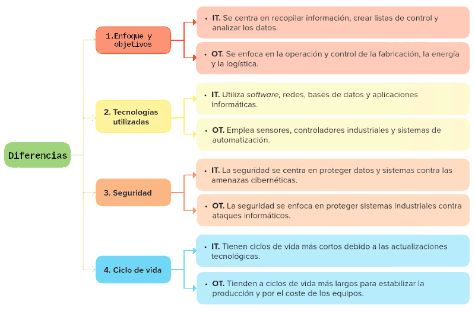
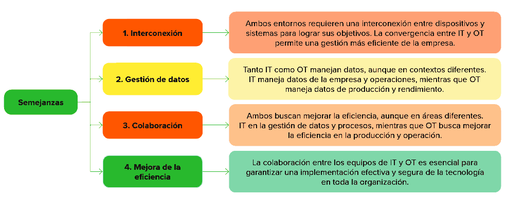

Las entornos IT y OT son dos áreas distintas de la tecnología empresarial, que tienen objetivos y enfoques diferentes, pero que también se complementan para mejorar la eficiencia y el rendimiento de la organización.


Digitalización en planta (OT)
El enfoque operativo de la digitalización recibe el nombre de digitalización en planta y se refiere a la integración y aplicación de tecnologías digitales en los procesos y las operaciones industriales para mejorar la eficiencia operativa, la productividad y la toma de decisiones en el entorno de fabricación o producción. Sus principales aspectos son:
- Automatización y control avanzado: mediante la implementación de sistemas automatizados para controlar y monitorizar procesos en tiempo real, reduciendo la dependencia de la intervención humana.
- Sensores IoT: el uso extensivo de sensores y dispositivos conectados para recopilar datos operativos que permitan la monitorización continua y la optimización de procesos.
- Gemelos digitales: creación de modelos digitales que repliquen procesos y sistemas físicos, facilitando la simulación, análisis y optimización virtual.
- Realidad aumentada (RA) y realidad virtual (RV): para mejorar la visualización, entrenamiento de operadores y la resolución de problemas de forma remota.
- Sistemas de gestión activos: permiten la monitorización y el mantenimiento eficiente de los activos físicos (maquinaria, equipamiento, infraestructura, etc) a lo largo de su ciclo de vida.
Digitalización en negocio (IT)
El enfoque empresarial recibe el nombre de digitalización en negocio, refiriéndose a la aplicación de tecnologías digitales en funciones y procesos relacionados con la gestión y operación de la organización. Incluye herramientas para la mejora de eficiencia en recursos humanos, financias, logística y relaciones con los clientes. El objetivo es optimizar la toma de decisiones estratégicas, mejorar la experiencia del cliente y garantizar la eficiencia en las operaciones comerciales. Sus principales aspectos son:
- Sistemas ERP: implementación de plataformas integrales que unifiquen la gestión de procesos empresariales, como finanzas, recursos humanos y logística.
- Analítica avanzada y big data: para el análisis de grandes volúmenes de datos.
- Inteligencia artificial y machine learning: para automatizar procesos, mejorar la personalización y optimizar operaciones.
- Blockchain: aplicación de tecnologías de almacenamiento de información distribuida para garantizar la seguridad y la trazabilidad en transacciones comerciales y registros.
- Informática en la nube: adopción de servicios que permitan facilitar el almacenamiento, procesamiento y acceso a datos desde cualquier lugar.
- IoT: permite la interconexión de dispositivos físicos, posibilitando la recopilación y compartición de datos en tiempo real, facilitando la monitorización y el control remoto de operaciones, así como la obtención de información valiosa para la toma de decisiones.